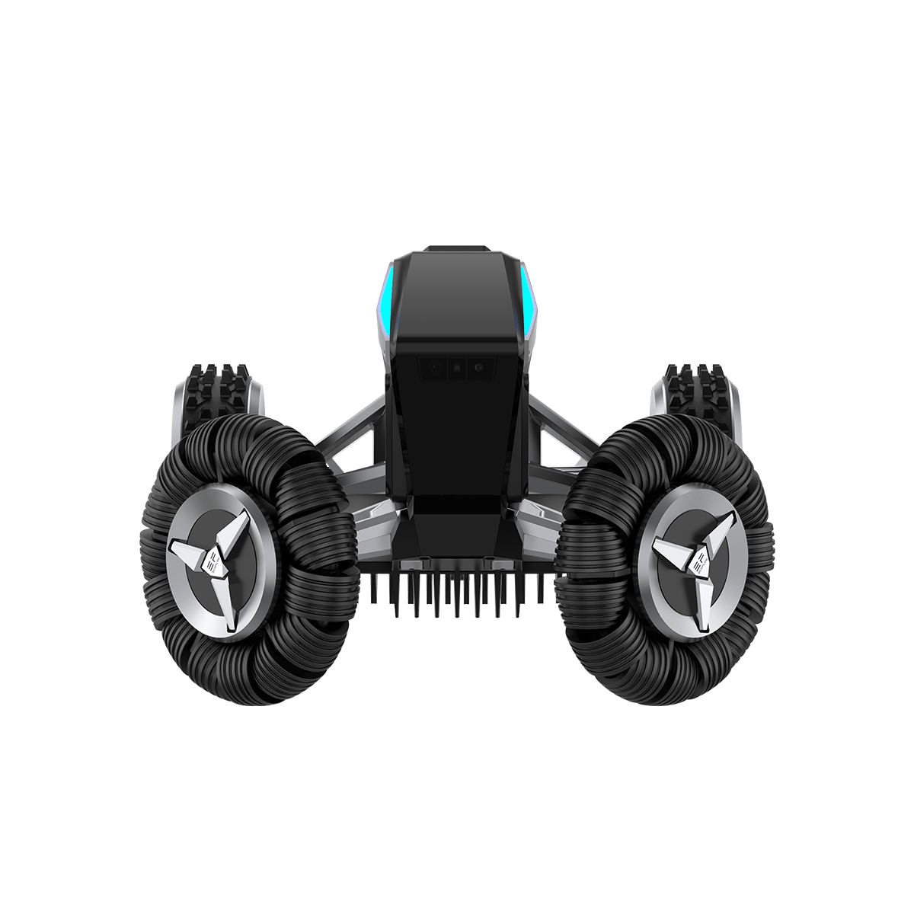

"L'EcoFlow Blade est l'originalité du marché — tondeuse + souffleur de feuilles dans un seul produit. Navigation sans câble, batterie compatible gamme EcoFlow. Pour les propriétaires qui optimisent tout."
Le souffleur de feuilles c'est le game changer de l'automne. Plus de ramassage manuel. Et la batterie EcoFlow compatble avec ma station portable. Génial.
Innovation vraiment utile. 3 200 m² sans câble, souffleur pour les feuilles en automne. L'app EcoFlow est claire. Juste les pentes à 30% max sont la limite.
Super concept mais 2 199 € pour de la Vision sans RTK... Le souffleur de feuilles justifie une partie du surcoût mais c'est cher quand même.
Parfait pour mon jardin avec beaucoup de chênes. En automne le souffleur repousse les feuilles du gazon automatiquement. Vraiment utile, je ne savais pas que j'en avais besoin.
Répondez à 3 questions et obtenez votre sélection personnalisée parmi 30 robots.